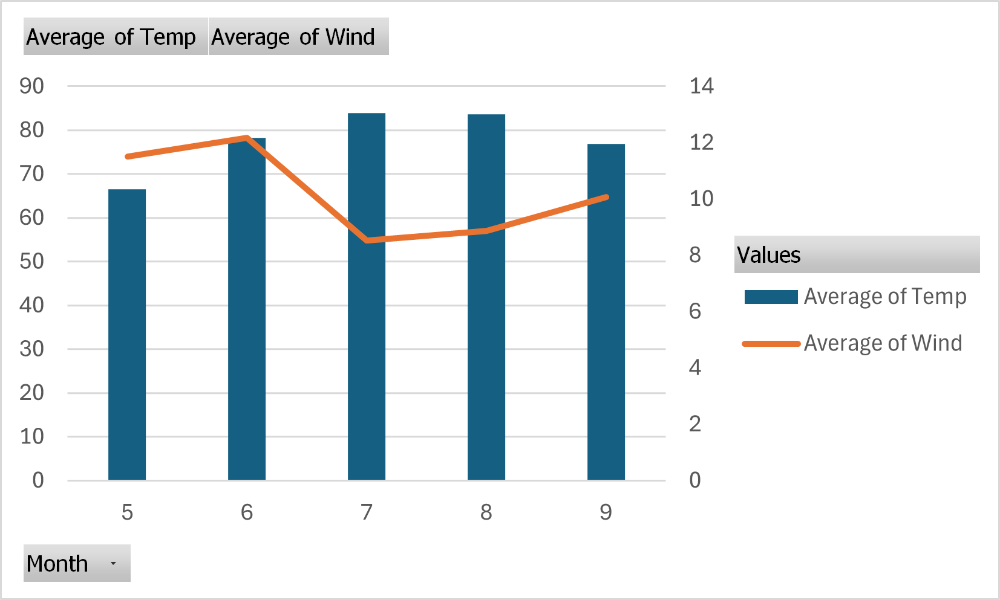

6 Victorious
Welcome to Victorious’ Page.
WEEK ONE
Wedneday
Aug 28th 2024
6.1 Air Quality Data Modeled using Excel
Instructions:
Go to our class in D2L table of contents, choose a dataset and explore
Repeat the steps of the previous example, but do the most amount of different plots you can.
6.1.1 I used a scatter plot to visualize the relationship between wind and temperature.
The plot shows a negative correlation between wind speed and temperature, meaning with increased wind speed, the temperature begins to drop. It also reveals most data points are clustered around the temperature range of 60/90 degrees and wind speed of 5/15 units, this indicates common wind and temperature within the sampled area.
The downward trend suggests that higher wind speeds tend to be associated with lower temperatures, but the variability in the data indicates that this is not the only factor affecting temperature.
Scatter plot seem best for visualizing relationships, below plot reveals the Ozone levels across different temperature ranges.
The plot reveals a generally positive relationship between temperature and ozone levels, with higher temperatures leading to higher ozone levels. The presence of an outlier suggests that under certain conditions, ozone levels can spike significantly, which may require further investigation to understand the underlying causes. The outlier might be a result of wrong calculation, error in transferring of data or a weather anomaly. At any rate, further investigation will be required to reach a conclusive decision.
- Ozone distribution was also recorded to visualize Ozone concentration in the dataset.
The histogram shows that low ozone concentrations are the most common in the dataset, while higher concentrations are much less frequent. This right-skewed distribution suggests that most observations are clustered at lower ozone levels, with only a few instances of higher concentrations that could be outliers or represent unusual conditions.
6.1.2 Closer analysis of concentration intervals:
[0, 22]: This first interval has the highest frequency, with around 80 observations. This suggests that most ozone levels in the dataset are quite low.
[22, 44] and [44, 66]: The frequency decreases significantly in these intervals, showing that moderate ozone levels are less common but still present.
[66, 88] and above: The number of occurrences in these intervals continues to drop, indicating that high ozone levels are uncommon.
The highest intervals, [132, 154] and [154, 176], have almost no observations, confirming that extreme ozone levels are rare.
I assumed there must exit a relationship between solar radiation and season, so i tried to module this relationship with a bar chart:
It made no sense. So i tried with a pivot bar chart:
The chart indicates that solar radiation peaks during the summer months, particularly in July, which aligns with typical seasonal patterns. These are the summer months where countries experience longer day light, stronger sunlight which typically leads to higher solar radiation emissions.
The presence of the “(blank)” bar suggests that are some missing data which resulted from cleaning the dataset and replacing ‘0’ value where ‘NA’ were otherwise recorded, specially in the solar.r data.
Overall, the chart helps visualize how solar radiation varies throughout the year, highlighting the expected seasonal changes in sunlight exposure.
What plot do you think represents the better data? The Pivot Chart followed by the Scatter Plot. For the purpose of the weeks lessons i will choose the Scatter Plot that models the relationship between temperature and windspeed.
Why? It gives for easy calculation, it depicts the best fit line for regression calculation, the different occurrences in the dataset; displaying what data cluster looks like, negative correlation and outliers. This chart could be easily chosen to teach basic statistics. However, with the Pivot Chart, it is easy to read and understand straightaway and interpret what the chart is inferring but will not be chosen to teach intro to statistics or Excel in R.
Friday
6.2 Atitudes
Instructions:
Go to our class in D2L table of contents, choose a dataset and explore
Repeat the steps of the previous example, but do the most amount of different plots you can.
Dataset Name: Attitude
Size = 706bytes
6.2.1 What is in the Attitude dataset:
The dataset seems designed to evaluate different aspects of the work environment and how they relate to employee satisfaction, performance, and opportunities for growth.
For the purpose of the class, this dataset shall be applied to students instead of employees. It will be used to understand how student experience learning, how they rank their school/university, lecturers performance and opportunity for growth or continuing in higher ed within the same school.
Analyzing this data can help in understanding the factors that influence students attitudes towards a school and identifying areas for improvement within that school.
6.2.2 Dataset Variables:
Rating: This is the overall score or satisfaction rating given by students, perhaps based on their experience at the school.
Complaints: Represents the number of complaints or grievances filed by students, possibly indicating dissatisfaction or issues in the school environment.
Privileges: Refer to the benefits or perks that certain students receive, such as the gtsnts, scholarship, PhD student privileges, or other library/sports privileges.
Learning: Opportunities for learning and practicum, like training programs or skill enhancement opportunities available to students within certain discipline.
Raises: Indicates how frequently or generously students receive privileges. This could be tied to grades. Students are giving raises according to their academic performances.
Critical: This measure how critical or demanding the work load on the students are, possibly reflecting the level of pressure or stress students undergo to get these privileges.
Advance: Indicates opportunities for advancement within the university, showing how easy or difficult it is for students to become professors.
Data Modelling and Visualization
Relationship between Rating and Raises
The scatter plot indicates that there is an upward trend, that is, higher ratings are often associated with higher raises. Meaning that students who receive grants and scholarships tend to rate their university experience positively and vice versa.
Most of the data points are clustered in certain areas of the plot, particularly where the ratings and raises are both mid to high. This could mean that majority of students who receive reasonable raises are also moderately to highly satisfied.
Interpretation
The positive correlations suggests that raises might be tied to performance or satisfaction. Students with higher marks may receive better raises as a form of reward.
Conversely, receiving scholarship and grants could incentivize a student to earn higher grade.
Distribution of Learning Scores

The histogram reveals that learning scores are distributed across the dataset with most scores centered around the median indicating that most students have similar learning experiences.
Majority of learning scores fall within the middle range, around the median of 55.5, which suggests that most students rate their learning opportunities similarly, neither extremely high nor low.
Interpretation
The histogram shows that the university might have a consistent approach to offering learning opportunities, as most are centered around the middle.
On a good note, since the data is not heavily skewed, it means there might be room for improvement.
Correlation Between Complaints and Privileges
The scatter plot points are somewhat dispersed around the trend line, meaning that while there’s a general trend showing a positive correlation between complaints and privileges, the correlation isn’t very strong. Some points might be far above or below the trend line, indicating instances where the number of complaints and the level of privileges do not follow the general pattern. This variability suggests that other factors might be influencing the relationship, or that the correlation between complaints and privileges is moderate rather than strong.
Conclusion:
The dataset reflects complex relationships where certain metrics correlate positively with outcomes like privileges and raises. However, these relationships are not straightforward, indicating the presence of other influencing factors.
The distribution of scores and the variability observed suggest diverse performance levels and outcomes within the data, hinting at the need for further detailed analysis to uncover underlying drivers.
What plot do you think represents the better data? The distribution of learning across the dataset.
Why? The histogram depicts the distribution learning scores accurately, it holds several information; for instance, certain score ranges are more common which indicates varying levels of difficulty or achievement among the participants. This could so by the school of departments design. It could be that convergence of performance around mean is due to standardized assessments or common learning patterns which most students have come to expect or most students understood the topics more than other topics.
Reported the findings in - excel-basics_Attitude_Fashina_082624.
Saturday
Week 1 Project
##Visualization Of National Centers For Environmental Information (NCEI) Dataset
Instruction for completing assignment:
From your project source provide simple visualization of a dataset you can find in your source.
6.2.3 Add the method used and the following information to your quarto report:
The context of the dataset
The dataset is a collection of meteorological observations from a specific weather station identified as “KJELLER AIRPORT, NO”. This dataset is used by the National Center For Environmental Information (NCEI) for studying weather trends, creating predictive models, or understanding how atmospheric conditions change over time.
Based on the column names and data structure, the dataset consists of:
1. Geographical Information: - STATION, LATITUDE, LONGITUDE, ELEVATION: These columns provide details about the specific location where the weather observations were recorded.
2. Time-based Observations: - Date/Time: The dataset records weather data at hourly intervals, providing a time-series structure for analyzing weather patterns.
3. Meteorological Data: - SLP (Sea Level Pressure): Atmospheric pressure at sea level, which is useful in studying weather systems, such as predicting storm conditions or high-pressure systems. - WND, TMP, VIS, DEW, etc.: These columns seem to encode data on wind speed/direction, temperature, visibility, dew point, and other weather-related variables. They are stored in a format that requires further decoding.
4. Purpose: - It would appear that the is used for tracking and analyzing weather conditions over time at the specified station. It could be useful for forecasting, climate studies, or aviation-related weather monitoring.
The source and link to the dataset - (csv)
The source is National Centre For Environment Information (NCEI)
https://www.ncei.noaa.gov/data/global-hourly/access/2024/01466099999.csv
Name : 2024-08-26 10:32 - 93K
Original dataset consists of 301 rows and 25 columns.
Cleaned dataset consists of 301 rows and 28 columns.
9 columns were deleted(correlation with other columns not clear and also not necessary for this analysis)
5 of the original columns were decoded into 11 additional columns:
Wind is decoded into
Wind_Direction
Wind_Speed_Tenths
Wind_Speed_Quality
Wind_Speed_Meters
Wind_Type
Temperature is decoded into
Temperature_Celsius
Temperature_Quality
Sea_Level_Pressure_hPa is decoded into
Sea_Level_Pressure_hPa
SLP_Quality
Dew is decoded into 2 columns
Dew_Point_Celsius
Dew_Point_Quality
Date was seperated to 2 columns
Date
Time
6.2.4 Data Cleaning Methods Employed
###Column Selection
Out of the original 25 columns, 9 were found to be missing chunks of data. These 9 columns were dropped using Python and importing Pandas as pd. I then fed the NCEI dataset into Python using “data = pd.read_csv(r’C:\path_to_the_dataset_on_my PC. csv)”
I used python to print the data column heads - print(data.head()))
I had it print null data by “print(data.isnull().sum())
I also had python drop the null columns “data_cleaned = data.dropna())
- Total 9 columns were dropped.Decoding Encoded Data: Date Conversion
Converted DATE Column to Datetime: The DATE column originally combined both dated and time. I split this into two separate columns by using the text to column function in excel.
Sea Level Pressure (SLP) Conversion Reformatted and Converted SLP: The SLP column contained values in string format with commas as delimiters. I decoded this using the Excel’s text to column function. The same method was used to decode the Wind, Temperature, and Dew variables.
Adding visualization to quarto document, including label and captions.
Add a description of what we should understand from your visualization, and how this connect with your project scope.

Above Line plot models the relationship between the sea level pressure and time. Here’s my analysis:
1. Initial Decline: The plot begins with a relatively steady but slow decrease in SLP during the first few months of 2024 (January through May).
2. Sharp Increase: Around June, there is a significant, sharp increase in SLP, jumping to a much higher value.
3. Plateau: After this large spike, the SLP seems to stabilize at a new elevated level, remaining constant through July and August.
Possible Interpretation:
The initial period shows some minor fluctuations or a gradual decline in sea level pressure, which might indicate typical atmospheric conditions.
The sharp rise could suggest a sudden weather event or anomaly that caused a dramatic increase in pressure.
The stabilization afterward could be due to stable high-pressure systems or data issues (such as errors in recording or data entry).
Temperature Over Time

Observing the interaction between temperature and time reveals a general increase in temperature over time, however, above plot shows some extremely high temperature values . This suggests that there may be underlying issues with the data which might require further investigation of the dataset.
WEEK TWO
Friday
##Air Quality Data Analysis and Modeling Using Excel Pivot Chart
###Data Type: CVS type, 154 entries and 6 columns.
Dataset Content: After cleaning the dataset contains 112 entries and 6 columns, representing the following variables:
Ozone: Ozone concentration (in parts per billion). Solar.R: Solar radiation (in Langley units). Wind: Wind speed (in miles per hour). Temp: Temperature (in degrees Fahrenheit). Month: Month of observation. Day: Day of the month.
All columns are complete with no missing values. The types of data are mostly integers, with wind speed recorded as a floating-point number
###Cleaning Method: The dataset was cleaned exclusively using MS Excel. The Find and Replace function was employed to locate all instances of “N/A” and replace them with “0”. Afterward, a few test plots were generated, which revealed some deficiencies in the data. To address this, additional cleaning was performed by removing all rows containing “0” values.
Data Analysis Explore trends over time. Visualize correlations between temp, ozone level over time. Pivot tables were created from the dataset for analysis, and pivot charts were plotted for visualization.
Ozone and Temperature Correlation
This line chart shows the sum of Ozone levels, sum of Temperature, and sum of Days plotted against the Month. Here’s what can be inferred from the plot:
B. Ozone Levels (Blue Line): Ozone levels fluctuates across the months. June shows a lower ozone level compared to July, where ozone levels peak. Ozone levels gradually decrease between July and September. This trend suggests that ozone levels are higher in July but decline towards the end of summer and into early fall.
A. Temperature (Orange Line): Temperatures follow a rising trend from May to July, peaking in July. After peaking in July, the temperature decreases slightly in August, then increases again in Month September. This suggests that July tends to be the hottest month in the dataset, followed by slight variations in temperature in the following months.
C. Day (Green Line): Days appear to be relatively consistent across the months, with only minor variations. This line indicates the total number of days contributing to the data for each is constant. This is an accurate visualization as the raw data shows data collected from 1st of each month to the last day.
Conclusion: The plot highlights a clear relationship between temperature and ozone levels, with both peaking in July. The consistent sum of days indicates uniform data collection across months. This pattern suggests that high summer temperatures contribute to higher ozone levels, which decline as temperatures drop towards the end of summer.
Temperature and Wind Correlation

This combination chart displays the average temperature (bar chart) and the average wind speed (line chart) across the different months.
A. Temperature Trends (Blue Bars): June and July have the highest average temperatures, both close to or exceeding 80 degrees. The months of May and September show relatively lower average temperatures compared to the peak summer months. Temperature is highest in July, indicating the middle of summer, and decreases slightly toward September.
B. Wind Speed Trends (Orange Line): May starts with higher wind speeds, averaging around 10-12 mph.
Wind speeds are highest in June, with a slight drop in July, followed by relatively steady or slightly increasing wind speeds in August and September. July, which has the highest average temperature, coincides with lower wind speeds, indicating calm summer conditions.
Conclusion: The plot shows that July experiences the highest average temperatures but lower wind speeds, while June sees the highest wind speeds. This inverse trend between wind speed and temperature, especially during peak summer months, suggests that hotter conditions may coincide with calmer winds. This pattern could be typical of a warm season where high temperatures are associated with reduced wind activity.
Combination bar chart of multiple variables across different months.
Key Points Temperature and Solar Radiation: The high solar radiation levels in July and August correspond to higher average temperatures, which is typical for summer months.
Ozone and Temperature: Ozone levels are highest in July, suggesting that warmer temperatures lead to higher ozone concentrations, likely due to increased sunlight and heat contributing to ozone formation.
Wind Speed: Wind speeds are highest in the earlier months (May and June) but decrease in the peak summer months, which could imply calmer weather conditions during the hottest periods.
Conclusion: The chart visualization suggests a clear relationship between temperature, solar radiation, and ozone levels. As solar radiation and temperature increase during the summer months (especially in July), ozone levels also rise. Wind speeds, however, show an inverse relationship, with higher wind speeds occurring in the cooler months and lower wind speeds in the hotter summer months. This pattern is typical of mid-summer conditions, where higher temperatures and calmer winds create conditions conducive to higher ozone concentrations.
Saturday
##TIME TO RECHECK DATA FOR ANOMALY!
- It was discovered that the dataset had been corrupted starting from row 126 onward. I proceeded to remove these rows and reran the test.
###Sea_Level and Months Data Error.

PIVOT TABLE CHALLENGE
Pivot Tables by default sum up the number formatted columns on the table. This plot, by doing, gave unrealistic figures of temperature values, rising to 35 thousand hpa. I revisted the Pivot table and changed the summation method to ‘average’ and the below plot is the result.

The new plot, with the average aggregation applied, provides a more accurate depiction of sea-level pressure trends over time. The values are within the expected range, and the daily fluctuations suggest typical atmospheric behavior. See below to information about atmospheric behaviour.
###The corrected Sea_level_Pressure Vs Date now looks like this:

The plot provides a better representation of how sea-level pressure changes over time. It also shows outliers in the dataset which warrant further investigation. Despite the outliers, the rest of the data appears to follow a consistent pattern showing typical fluctuations that could be linked to daily and seasonal atmospheric changes
Temperature over time now looks like this:

kjeller Airfield, Norway.
https://en.wikipedia.org/wiki/Kjeller_Airfield
The plot also proves true about Norwegian’s weather in December/January. https://www.campervannorway.com/blog/travel-ideas/norway-in-january#:~:text=As%20a%20midwinter%20month%2C%20January,dry%20to%20rainy%20or%20snowy.
WEEK THREE
Wednesday
6.3 Here’s the published Dashboard in Tableau
Click on the link below to see the dashboard in Tableau.
https://public.tableau.com/views/AnscombesDataset_17261215380710/Dashboard1?:language=en-US&:sid=&:redirect=auth&:display_count=n&:origin=viz_share_link
##Brief Description of Plots ###Scatter Plot The scatter plot displays the relationships for all four datasets from Anscombe’s Quartet. Each plot represents a pair of variables (x1 vs. y1, x2 vs. y2, etc.) with a trend line that shows the linear relationship:
Inferences from Scatter Plots:
If one imagines that each dataset shows a similar statistical summary (e.g., mean, standard deviation, correlation) when calculated, but the scatter plots reveal significantly different relationships and distributions:
The first dataset represents a simple linear relationship. The second dataset might better fit a polynomial model due to its curvature. The third dataset shows the impact of an outlier on a linear regression model. The fourth dataset emphasizes the limitation of using linear models when there is no variation in one of the variables (x), except for an outlier.
Importance of Visualization: These plots emphasize the importance of visualizing data to understand the actual dynamics between variables, rather than solely relying on summary statistics. Despite similar summary statistics across the four datasets, the underlying data patterns and appropriate model fits are distinctly different. This visualization perfectly demonstrates the purpose of Anscombe’s Quartet: to illustrate the limitations of descriptive statistics alone and the value of graphical summaries in data analysis
###Histogram This histogram shows the distribution of the y1 values across bins, which allows for the understand of how often each value (or range of values) occurs in the dataset.
Shape of the Distribution: The overall shape of the histogram doesn’t suggest a clear normal distribution (bell curve). Instead, it appears to have multiple clusters of values. The values seem to be slightly bimodal, with clusters around 4-5 and 8-9.
Relation to Anscombe’s Quartet: The Anscombe’s Quartet is famous for illustrating that datasets with nearly identical statistical properties (like mean, variance, and correlation) can have very different distributions when visualized. In this case, the histogram shows that the y1 values are not uniformly or normally distributed and instead have distinct clusters.
Saturday
##Visualization Of National Centers For Environmental Information (NCEI) Dataset
6.3.1 context of the dataset
The dataset is a collection of meteorological observations from a specific weather station identified as “KJELLER AIRPORT, NO”. This dataset is used by the National Center For Environmental Information (NCEI) for studying weather trends, creating predictive models, or understanding how atmospheric conditions change over time.
Based on the column names and data structure, the dataset consists of:
1. Geographical Information: - STATION, LATITUDE, LONGITUDE, ELEVATION: These columns provide details about the specific location where the weather observations were recorded.
2. Time-based Observations: - Date/Time: The dataset records weather data at hourly intervals, providing a time-series structure for analyzing weather patterns.
3. Meteorological Data: - SLP (Sea Level Pressure): Atmospheric pressure at sea level, which is useful in studying weather systems, such as predicting storm conditions or high-pressure systems. - WND, TMP, VIS, DEW, etc.: These columns seem to encode data on wind speed/direction, temperature, visibility, dew point, and other weather-related variables. They are stored in a format that requires further decoding.
4. Purpose: - It would appear that the is used for tracking and analyzing weather conditions over time at the specified station. It could be useful for forecasting, climate studies, or aviation-related weather monitoring.
###The source and link to the dataset - (csv)
The source is National Centre For Environment Information (NCEI)
https://www.ncei.noaa.gov/data/global-hourly/access/2024/01466099999.csv
Name : 2024-08-26 10:32 - 93K
Original dataset consists of 301 rows and 25 columns.
Cleaned dataset consists of 301 rows and 28 columns.
9 columns were deleted(correlation with other columns not clear and also not necessary for this analysis)
5 of the original columns were decoded into 11 additional columns:
Wind is decoded into
Wind_Direction
Wind_Speed_Tenths
Wind_Speed_Quality
Wind_Speed_Meters
Wind_Type
Temperature is decoded into
Temperature_Celsius
Temperature_Quality
Sea_Level_Pressure_hPa is decoded into
Sea_Level_Pressure_hPa
SLP_Quality
Dew is decoded into 2 columns
Dew_Point_Celsius
Dew_Point_Quality
Date was seperated to 2 columns
Date
Time
6.3.2 Data Cleaning Methods Employed
###Column Selection
Out of the original 25 columns, 9 were found to be missing chunks of data. These 9 columns were dropped using Python and importing Pandas as pd. I then fed the NCEI dataset into Python using “data = pd.read_csv(r’C:\path_to_the_dataset_on_my PC. csv)”
I used python to print the data column heads - print(data.head()))
I had it print null data by “print(data.isnull().sum())
I also had python drop the null columns “data_cleaned = data.dropna())
- Total 9 columns were dropped.Decoding Encoded Data: Date Conversion
Converted DATE Column to Datetime: The DATE column originally combined both dated and time. I split this into two separate columns by using the text to column function in excel.
Sea Level Pressure (SLP) Conversion Reformatted and Converted SLP: The SLP column contained values in string format with commas as delimiters. I decoded this using the Excel’s text to column function. The same method was used to decode the Wind, Temperature, and Dew variables.
Adding visualization to quarto document, including label and captions.
####Visualization in Tableau. Throughout this third week, I worked extensively with Tableau, finding it to be a highly enjoyable and powerful visualization tool. While there is a lot to learn within a short time, Tableau’s detailed and visually appealing outputs make the effort worthwhile. Although Tableau incorporates some object-oriented programming concepts, it’s not something we needed to delve into deeply during this period.
This week, I created two notable visualizations using the NCEI dataset: a static wind rose and a radial wind rose. Tableau initially struggled with generating a traditional wind rose, so I opted to create a radial one instead (Both created programtically). The wind rose, intended to mimic the function of a windmill for weather observation, serves as a graphical tool to display the distribution of wind speed and direction over a specific period. It provides a concise visual summary of how wind speed and direction are typically distributed at a location, aiding in identifying prevailing wind patterns. The wind mill describes my dataset perfectly. Below is a copy of my dashboard using Tableau.
Above Tableau Dashboard displays various visualizations of the weather center data, offering insights into wind patterns and conditions:
WNDIRSPEED: This plot aims to illustrate the wind speed over time, broken down by months. It shows how wind speed fluctuates throughout different months, with January showing a noticeable peak. This could indicate periods of higher wind activity during certain months.
RadialWR (Radial Wind Rose): The radial wind rose displays the distribution of wind direction and speed in a circular format, indicating the frequency and strength of winds coming from various directions. It helps in identifying the prevailing wind directions and their intensities.
WndRose (Wind Rose): This is a bar chart version of a wind rose, categorizing wind speed by direction groups (N, NE, E, etc.). It shows which directions have higher wind speeds on average, indicating that winds from the NE and S directions are particularly strong in this dataset. Additionally, i have included temperature data, i supect a potential correlation between wind direction and temperature changes.
BarChart: This chart displays the average wind speed across different bins. It shows how often different wind speed ranges occur, highlighting that higher speeds (around 80) are less frequent but still present, indicating a varied wind speed distribution.
Overall Interpretation: - The visualizations suggest that wind speed and direction vary across time and direction, with some directions (NE, S) showing higher wind speeds. - There might be a relationship between wind direction and temperature, as seen in the Wind Rose plot. - The radial wind rose helps identify the most common wind directions and their speeds, which could be useful for understanding local weather patterns or for purposes like wind energy assessments.
These plots collectively provide a comprehensive view of the wind and temperature data, aiding in the analysis of prevailing wind conditions and their potential impact on the environment.